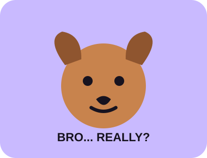
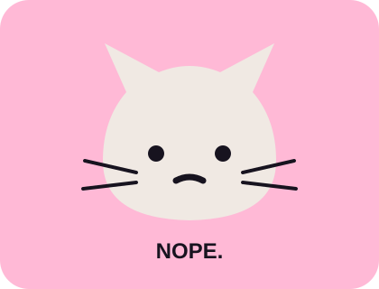

Click things.
See what reacts.
Small interactions, playful messages and hidden details reward curiosity without turning the homepage into a maze.
Go to meme lab →Explore the pages, try the login, break a few things, and see what happens when a website decides it has a personality.
Everything is open. You do not need a password to look around.
Small interactions, playful messages and hidden details reward curiosity without turning the homepage into a maze.
Go to meme lab →Clean sections on the surface. Dumb little jokes underneath. Exactly where a website should keep its personality.
Why it exists →Normal demo access is one tap away. Repeated wrong attempts start revealing that the login is not quite normal.
Try the login →

The idea is simple: make a website that looks polished enough to trust, then give it just enough personality that people start testing what happens when they click the wrong thing.
Use the demo access below, or try random credentials and watch the system react.
Explore is public. Login is just where the fun starts.